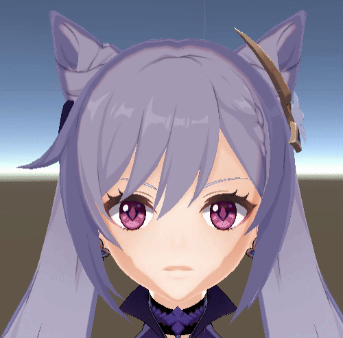
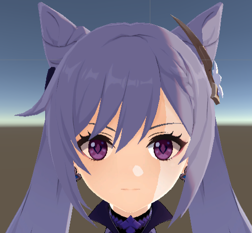
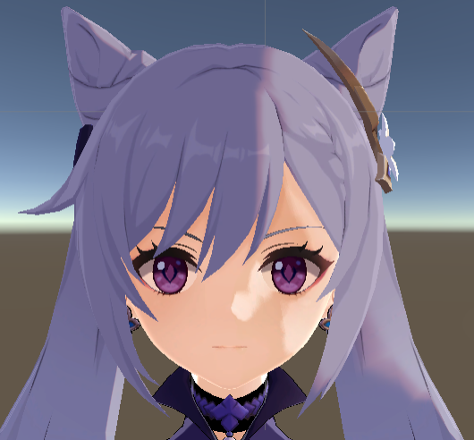
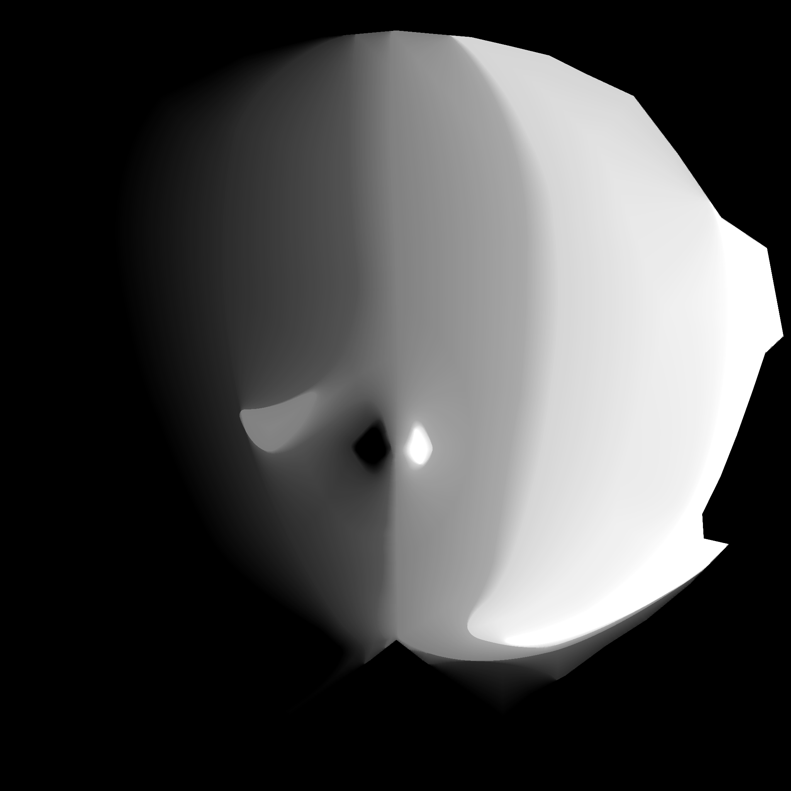

一般来说，卡渲都会对面部阴影进行单独的处理，使得面部阴影效果更贴近卡通绘画的习惯。
本文中采取使用SDF贴图的方式来形成面部阴影，个人觉得比修改法线更简单快速。
效果展示
先上个效果动图：
与直接用漫反射模型计算出来的阴影做比较：

在一些特殊角度的时候，SDF贴图生成的效果也比直接用漫反射计算出来的好，更符合卡通人脸的效果：

SDF阴影贴图的结果

直接用漫反射计算的结果
SDF算法介绍
首先我们需要搞清楚SDF算法生成的贴图是什么，为什么他不像写死在上AO的阴影，可以动态帮我们实现阴影效果？
SDF算法可以实现图像之间的平滑过渡，只需要对两张SDF进行lerp的插值，就可以得到视觉上的平滑过渡效果。（本质上是距离间的平滑过渡）
SDF面部阴影图的获得
知乎上有大佬写了一个脚本，可以直接生成这种面部光照图，要对图的效果进行修改也很容易，修改完example文件夹里的东西后再次运行脚本就可以啦~
在此就不重复造轮子，偷懒直接用大佬的脚本生成的光照图，感谢大佬。
在运行完脚本后，我们获得了这样一张混合光照图：

接下来我们要做的就是在我们的项目中使用上这张混合光照图。
具体实现
1
2
3
4
5
6
7
8
9
10
11
12
13
14
15
16
17
18
19
| #if _Face
float4 left_FaceTex = tex2D(_FaceTex,i.uv);
float2 right_uv = float2(1-i.uv.x,i.uv.y);
float4 right_FaceTex = tex2D(_FaceTex,right_uv);
float2 Left = normalize(mul(unity_ObjectToWorld, float3(1, 0, 0)).xz);
float2 Front = normalize(mul(unity_ObjectToWorld, float3(0, 0, 1)).xz);
float2 light_Dir = normalize(worldLightDir.xz);
float angel = 1- clamp(0,1,dot(Front,light_Dir)*0.5 +0.5);
float tex_direct = dot(light_Dir,Left) > 0 ? right_FaceTex.r : left_FaceTex.r;
float isShadow = step(tex_direct,angel);
float bias = smoothstep(0,_LerpMax , abs(angel - tex_direct));
if(angel > 0.99 || isShadow ==1){
diffcol = lerp(diffcol, diffcol *_SpecularColor.rgb, bias);
}
#endif
|